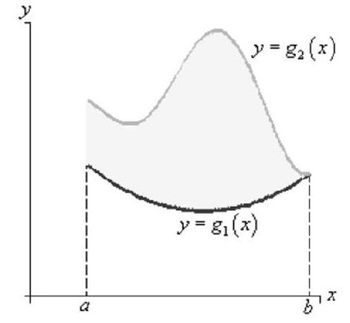
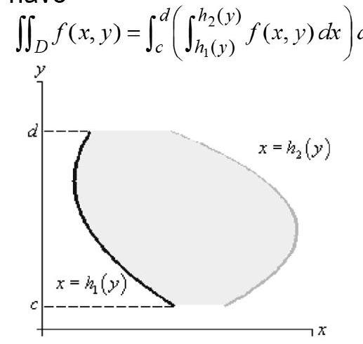

Double Integrals
Contents
Double Integrals¶
Double Riemann Sum¶
Let $f$ be a continuous function on a rectangle $R={(x, y)$ : $a \leq x \leq b, c \leq y \leq d}$. A double Riemann sum for $f$ over $R$ is created as follows.
Partition the interval $[a, b]$ into $m$ subintervals of equal length $\Delta x=\frac{b-a}{m}$. Let $x_{0}, x_{1}, \ldots, x_{m}$ be the endpoints of these subintervals, where $a=x_{0}<$ $x_{1}<x_{2}<\cdots<x_{m}=b$.
Partition the interval $[c, d]$ into $n$ subintervals of equal length $\Delta y=\frac{d-c}{n}$. Let $y_{0}, y_{1}, \ldots, y_{n}$ be the endpoints of these subintervals, where $c=y_{0}<$ $y_{1}<y_{2}<\cdots<y_{n}=d$.
These two partitions create a partition of the rectangle $R$ into $m n$ subrectangles $R_{i j}$ with opposite vertices $\left(x_{i-1}, y_{j-1}\right)$ and $\left(x_{i}, y_{j}\right)$ for $i$ between 1 and $m$ and $j$ between 1 and $n$. These rectangles all have equal area $\Delta A=\Delta x \cdot \Delta y$.
Choose a point $\left(x_{i j}^{}, y_{i j}^{}\right)$ in each rectangle $R_{i j}$. Then, a double Riemann sum for $f$ over $R$ is given by
$$ \sum_{j=1}^{n} \sum_{i=1}^{m} f\left(x_{i j}^{}, y_{i j}^{}\right) \cdot \Delta A . $$
Double Integral¶
Let $R$ be a rectangular region in the $x y$-plane and $f$ a continuous function over $R$. With terms defined as in a double Riemann sum, the double integral of $f$ over $R$ is $$ \iint_{R} f(x, y) d A=\lim {m, n \rightarrow \infty} \sum{j=1}^{n} \sum_{i=1}^{m} f\left(x_{i j}^{}, y_{i j}^{}\right) \cdot \Delta A . $$
Interpretations¶
$\iint_{R} f(x, y) d A$ represents the ‘signed’ volume of the solid that lies under the surface $f(x, y)$ above the region $R$ in the $x y$-plane. (That is, the volume of the solid(s) the surface $f$ bounds above the $x y$-plane minus the volume it bounds below the $x y$-plane on $R$.)
$A=\iint_{R} d A$ represents the area of the region $R$ in the $x y$-plane.
$f_{a v}=\frac{1}{A} \iint_{R} f(x, y) d A$ represents the average value of the function $f(x, y)$ on the region $R$.
Properties of Double Integrals¶
Let $f$ and $g$ be continuous functions on a rectangle $R={(x, y): a \leq x \leq b, c \leq y \leq d}$, and let $k$ be a constant. Then
$\iint_{R}(f(x, y)+g(x, y)) d A=\iint_{R} f(x, y) d A+\iint_{R} g(x, y) d A$.
$\iint_{R} k f(x, y) d A=k \iint_{R} f(x, y) d A$.
If $f(x, y) \geq g(x, y)$ on $R$, then $\iint_{R} f(x, y) d A \geq \iint_{R} g(x, y) d A$.
Fubini’s Theorem¶
If $z=f(x, y)$ is continuous on $R=[a, b] \times[c, d]$ then $$ \iint_{R} f(x, y) d A=\int_{a}^{b}\left(\int_{c}^{d} f(x, y) d y\right) d x=\int_{c}^{d}\left(\int_{a}^{b} f(x, y) d x\right) d y . $$
These are called iterated integrals. They can be found by evaluating two single integrals.
$\int_{c}^{d} f(x, y) d y$ means $x$ is held fixed (treated as a constant) and $f$ is integrated with respect to $y$ from $y=c$ to $y=d$. This procedure is called partial integration. The result is a function of $x$.
The second step is to integrate that function of $x$ with respect $x$ from $a$ to $b$.
Similarly, $\int_{c}^{d}\left(\int_{a}^{b} f(x, y) d x\right) d y$ means integrate $f$ with respect to $x$ with $y$ held fixed. This gives a function of $y$ which is then integrated with respect to $y$.
Iterated integrals are usual written without the brackets. (You should understand the $\int \ldots d x$ or $\int \ldots d y$ to act like a pair of brackets.)
Separable Integrals¶
Consider the special case $f(x, y)=g(x) h(y)$ on a rectangular region $R=[a, b] \times[c, d]$. $$ \iint_{R} f(x, y) d A=\int_{a}^{b}\left(\int_{c}^{d} g(x) h(y) d y\right) d x . $$ In finding the inner integral, $g(x)$ is treated as a constant so we can write $$ \iint_{R} f(x, y) d A=\int_{a}^{b} g(x)\left(\int_{c}^{d} h(y) d y\right) d x . $$ The inner integral also yields a constant so we can write $$ \iint_{R} f(x, y) d A=\left(\int_{a}^{b} g(x) d x\right) \cdot\left(\int_{c}^{d} h(y) d y\right) . $$ I.e. in this special case, the double integral can be written as the product of two single integrals.
Double integrals over General Regions¶
For a type I region $$ D=\left{(x, y): a \leq x \leq b, g_{1}(x) \leq y \leq g_{2}(x)\right} $$ we have $$ \iint_{D} f(x, y) d A=\int_{a}^{b}\left(\int_{g_{1}(x)}^{g_{2}(x)} f(x, y) d y\right) d x $$ 
For a type II region $$ D=\left{(x, y): h_{1}(y) \leq x \leq h_{2}(y), c \leq y \leq d\right} $$ we have
$$ \iint_{D} f(x, y) d A=\int_{c}^{d}\left(\int_{h_{1}(y)}^{h_{2}(y)} f(x, y) d x\right) d y $$

Note¶
Now we cannot easily reverse the order of integration.
The limits of the outer integral must always be constants. The limits of the inner integral may be functions of the outer variable.